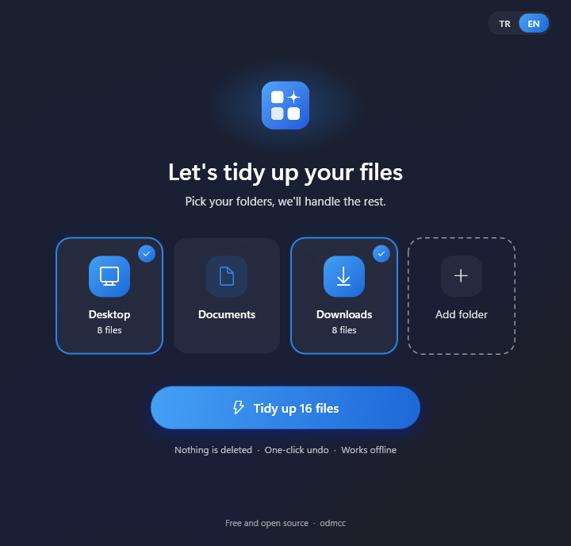
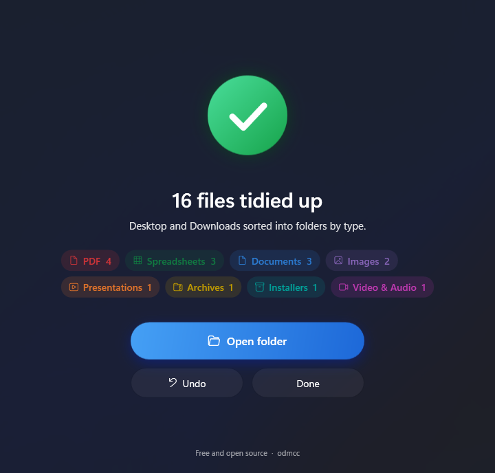

TidyDesk; Masaüstü, Belgeler ve İndirilenler'deki dosyaları türüne göre klasörlere ayırır. Hiçbir şeyi silmez, hiçbir yere göndermez, yaptığı her işlemi geri alabilirsin.
Açık kaynak. Windows 10 ve 11 (64-bit), macOS 14 ve sonrası. Kaynak kodu
Dağınık bir klasör, işinin önüne geçmesin. TidyDesk her dosyayı yerine koyar, hiçbirini silmez, internete çıkmaz ve fikrini değiştirirsen her şeyi geri alır.
TidyDesk bu yüzden yalnızca taşır, her adımı kaydeder ve bu bilgisayarın dışına hiçbir şey göndermez.
Dosyalar yalnızca taşınır. Aynı adda bir dosya varsa yenisi rapor (2).pdf adını alır, üstüne yazılmaz.
Her taşıma, olduğu anda günlüğe yazılır. Uygulamayı yarıda kapatsan bile Geri al çalışır.
Kodda ağ bağlantısı yok: ölçüm, güncelleme ya da yükleme yok. Dosya türünü anlamak için yalnızca ilk birkaç baytı okur.
Masaüstü, Belgeler ve İndirilenler hazır gelir. İstediğin başka bir klasörü de ekleyebilirsin; istersen alt klasörleri de kendi yerlerinde düzenlenir. Her kartta kaç dosyanın düzenleneceği yazar, "Neler taşınacak?" tam listeyi gösterir.
Dosyalar PDF, Belgeler, Tablolar, Görseller gibi klasörlere ayrılır. Uzantısı olmayan dosyalar içeriğinden tanınır.
Tek tıkla her dosya eski yerine döner. Geçmiş ekranından daha eski bir düzenlemeyi de geri alabilirsin.


Uzantısı olmayan bir dosya bile ilk birkaç baytından tanınır. Taranmış bir PDF, PDF klasörüne; adı kaybolmuş bir Word dosyası, Belgeler'e gider. Okuma yalnızca bu bilgisayarda olur.
Uzantısına bakarak şu klasörlere ayırır:
Hiçbirine uymayan dosyalar yerinde kalır; dağınıklığı büyütmez.
desktop.ini..crdownload, .part).Bir klasörü eklerken ve dosyaları taşımadan hemen önce TidyDesk klasörü denetler. Windows'un ve programların klasörleri ve ağ klasörleri baştan reddedilir. Sistem sürücüsünde yalnızca kendi kullanıcı klasörünün içi kabul edilir; USB bellek ya da ikinci bir disk ise tamamıyla seçilebilir.
Geçmiş ekranında her düzenleme ayrı durur. Bugünkünü, dünkünü ya da geçen haftakini; hangisini istersen tek tıkla geri al.
Windows'ta iki seçenek de aynı program: biri kurulumsuz, biri kurulumlu. Mac'te işlemcine uygun olanı seç.
TidyDesk.exe: çift tıkla çalışır. USB bellekten de açılır, bilgisayarda iz bırakmaz. Silmek için dosyayı silmen yeter.
TidyDesk-Setup.exe: Başlat menüsüne eklenir, "Yüklü uygulamalar"dan kaldırılır. Yönetici izni istemez.
M1, M2, M3, M4 ve sonrası. .dmg dosyasını aç, TidyDesk'i Uygulamalar klasörüne sürükle.
Intel işlemcili Mac'ler. Hangisi olduğunu Apple menüsü → Bu Mac Hakkında penceresinde "Çip" ya da "İşlemci" satırı söyler.
Intel Mac için indirProgram henüz kod imzalı değil. Windows ilk açılışta "bilgisayarınızı korudu" uyarısı gösterebilir: Ek bilgi'ye, sonra Yine de çalıştır'a bas. Kaynak kodu açık; istersen kendin derleyebilirsin.
Mac sürümü Apple tarafından onaylanmadı (noter onayı yok). İlk açılışta macOS "doğrulanamadı" der: Bitti'ye bas, sonra Sistem Ayarları → Gizlilik ve Güvenlik sayfasının altındaki Yine de Aç düğmesine bas. Bunu bir kez yapman yeter. macOS, Masaüstü ve diğer klasörler için ayrıca izin sorar. Mac'te açık dosyalar macOS'a sorularak bulunur; ama Önizleme gibi dosyayı açıp hemen kapatan programlar tanınamaz. Her taşıma yine geri alınabilir.